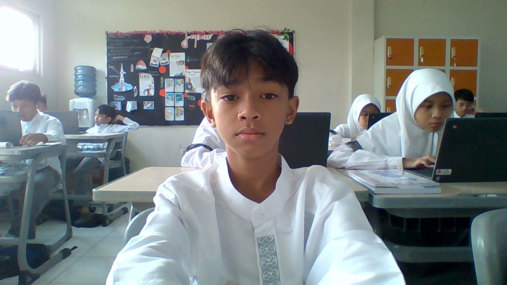

Karya Nyata dari Proses Belajar

Nama saya fikri nakhlah rafi saya sekolah di SMPIT Al Haraki di kelas 9 An-nasr hobi saya bermain bola dan bersepeda saya suka dengan mata pelajaran Matematika saya juga suka dengan pelajaran bahasa arab karena saya suka menghitung dan menghafal.
Saya lahir di Jakarta pada tanggal 27 bulan Juli tahun 2011, saya anak kedua dari empat saudara, hobi saya yaitu berenang dan bersepeda. saya anak kedua dari empat saudara, saya tinggal di permata depok regency cluster diamond 2 c17/12.
Hobi saya adalah bermain bola dan bersepeda. Saya juga memiliki bakat berenang yang saya kembangkan dengan mengikuti berbagai perlombaan. minat saya adalah dalam bidang olahraga, terutama renang. saya juga memiliki minat bersepeda yang saya lakukan untuk menjaga kebugaran.
Cita cita saya menjadi arsitektur atau kerja di pertambangan dan saya harap bisa masuk ke dalam universitas Institut Teknologi Bandung di jurusan FTTM atau SAPPK dan saya harap bisa mencapai cita-cita tersebut.
Saya sangat senang bisa belajar di SMPIT Al Haraki selama kelas 7,8,dan 9, saya mendapatkan banyak pengalaman berharga dan teman-teman baru. Saya juga merasa bahwa saya telah berkembang dalam hal akademis dan keterampilan sosial.